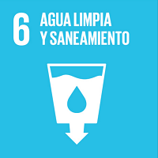

ÍNDICE
Garantizar la disponibilidad
y la gestión sostenible del agua
y el saneamiento para todos
METAS
6.1 De aquí a 2030, lograr el acceso universal y equitativo al agua potable a un
precio asequible para todos
6.2 De aquí a 2030, lograr el acceso a servicios de saneamiento e higiene adecuados
y equitativos para todos y poner fn a la defecación al aire libre, prestando
especial atención a las necesidades de las mujeres y las niñas y las personas
en situaciones de vulnerabilidad
6.3 De aquí a 2030, mejorar la calidad del agua reduciendo la contaminación,
eliminando el vertimiento y minimizando la emisión de productos químicos y
materiales peligrosos, reduciendo a la mitad el porcentaje de aguas residuales
sin tratar y aumentando considerablemente el reciclado y la reutilización sin
riesgos a nivel mundial
6.4 De aquí a 2030, aumentar considerablemente el uso efciente de los recursos
hídricos en todos los sectores y asegurar la sostenibilidad de la extracción y el
abastecimiento de agua dulce para hacer frente a la escasez de agua y reducir
considerablemente el número de personas que sufren falta de agua
6.5 De aquí a 2030, implementar la gestión integrada de los recursos hídricos a
todos los niveles, incluso mediante la cooperación transfronteriza, según proceda
6.6 De aquí a 2020, proteger y restablecer los ecosistemas relacionados con
el agua, incluidos los bosques, las montañas, los humedales, los ríos, los
acuíferos y los lagos
6.a De aquí a 2030, ampliar la cooperación internacional y el apoyo prestado a los
países en desarrollo para la creación de capacidad en actividades y programas
relativos al agua y el saneamiento, como los de captación de agua, desalinización,
uso efciente de los recursos hídricos, tratamiento de aguas residuales, reciclado
y tecnologías de reutilización
6.b Apoyar y fortalecer la participación de las comunidades locales en la mejora de
la gestión del agua y el saneamiento